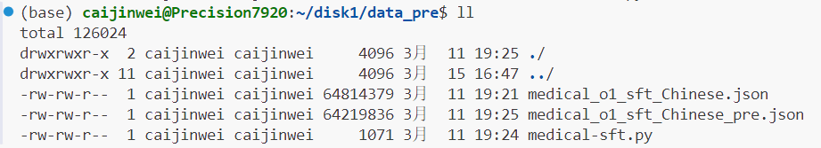

最常用
1
2
3
4
5
6
7
8
9
10
|
win + l #快速锁屏
ctrl + f #查找
alt + tab #切换页面
win + v #粘贴板
win + space #切换中英文
shift + delete #完全删除文件
tab #选中多行按tab一起缩进
shift + tab #多行取消缩进
ctrl + alt + . #黑屏时可关机、打开任务管理器
ctrl + alt + delete #黑屏时可关机、打开任务管理器
|
截图快捷键
1
2
3
|
win + shift + s #自带截图
alt + z #截图软件截图
alt + a #微信截图
|
命令行类命令
系统信息查看类
1
2
3
4
5
6
|
nvidia-smi #查看gpu使用情况
ipconfig #显示ip地址信息
watch -n 1 nvidia-smi #动态追踪查看显存占用
ping xxx #查看本机能否连通某网址
free -h #查看服务器内存（Mem-物理内存，Swap-交换空间）
df -h #查看服务器外存/硬盘使用情况（use%表示使用率）
|
会话管理指令
1
2
3
4
5
|
screen -S xxxx #创建会话，如screen -S test
ctrl+a d #退出会话同时保持程序运行(按住Ctrl，依次再按a,d)
screen -r xxxx #恢复会话，如screen -r test
exit / ctrl+d #关闭会话，会提示：screen is terminating
screen -ls #列出当前存在的会话列表
|
文件目录操作类
1
2
3
4
5
6
7
8
9
10
|
⬆/⬇ #切换历史命令
cd ./xx #切换到某某文件夹
pwd #显示当前工作目录的完整路径
ls #列出当前目录中的文件（-l、-a）
source xxx #在当前会话中执行某个脚本，使其立即生效
mkdir xxx #创建一个新目录
rmdir xxx #删除空目录（-p 一次删除多个空文件夹；-r 递归删除）
rm xxx #删除不为空的文件或目录（-r递归删除，常用在目录删除）
cp source destination #复制文件或目录到指定文件夹下
mv source destination #移动文件或目录
|
进程管理类
1
2
3
4
5
6
7
8
|
ps -p <PID> #查看进程信息（看不到使用者）
ps -f -p <PID> #查看进程详细信息（f表示full，全部信息）
kill <PID> #根据进程号杀死进程
kill -9 <PID> #强制杀死进程
top #实时监控系统中各个进程的资源占用情况
shutdown -h now #服务器立刻关机
shutdown -h 10 #10 分钟后自动关机
shutdown -r now #重启（=reboot也是重启）
|
文本处理类
1
2
3
4
5
|
grep "Hello" xx.txt #文本搜索指令，从txt文件中搜索包含指定字符串的行
grep -i "hello" xx.txt #忽略大小写搜索
grep -r "hello" /data #递归搜索，在一个目录搜索包含指定字符串的行
grep -n "Hello" xx.txt #显示匹配行的行号
grep -inr "hello" . #组合使用，点代表在当前目录下搜索
|
权限管理类
1
2
3
4
5
6
7
|
ls -l #列出当前目录中的文件以及权限（别称：ll）
--------------------通过符号修改权限-------------------
chmod u=rwx,g=rx,o=x xxx #对xxx文件夹的所有者、所属组和其他人修改权限
chmod g+w test.txt #对txt文件的所属组添加写的权限
chmod a-x test #对test文件夹的所有用户去除执行的权限（a表示所有人，即u+g+o）
--------------------通过数字修改权限-------------------
chmod 751 test #等价于chmod u=rwx,g=rx,o=x xxx（7 = rwx = 4+2+1，以此类推）
|
浏览器快捷键
1
2
3
4
5
|
ctrl + l #定位到地址栏（可通过设置后，通过应用快速打开某程序）
ctrl + t #新建标签页
ctrl + shift + t #重新打开刚才关闭的标签页
ctrl + tab #切换标签页
ctrl + n #打开一个新的浏览器窗口
|
typora快捷键
1
2
3
4
5
6
7
|
``` #插入代码块
$$ #插入公式
enter/shift + enter #不一样的换行方式
ctrl + t #新建表格
ctrl + enter #表格插入行
ctrl + shift + back #删除表格指定行
[]() #插入链接（前面加个“!”就是插入图片）
|
vim快捷键
1
2
3
|
:q #退出（如果有更改不会保存）
:wq #保存并退出
:q! #强制退出并丢弃未保存的更改
|
补充 & 参考
chmod 命令 （change mode）：修改文件或目录的权限
chown 和 chgrp：修改文件拥有者或所属组
格式：chmod [选项] 权限 文件名
权限的本质就是可以干什么，权限=角色（user、group、others）+目标权限属性（rwx）。
- Linux下包含两种用户：超级用户（root）和普通用户。在 Linux 中的每个用户必须属于一个组，不能独立于组外
- 在 Linux 中每个文件有所有者、所在组、其它组的概念
- 所有者-User：文件或目录的创建者
- 所在组-Group：文件或目录所属的用户组
- 其他-Others：除了文件所有者和用户组之外的所有人

1
2
3
4
5
6
7
8
9
10
11
12
13
14
15
16
17
18
19
20
|
权限的基本介绍(0-9位说明)：
第 0 位确定文件类型(d, - , l , c , b)
第 1-3 位确定所有者（该文件的所有者）拥有该文件的权限。---User
第 4-6 位确定所属组（同用户组的）拥有该文件的权限，---Group
第 7-9 位确定其他用户拥有该文件的权限 ---Other
文件类型：
- 普通文件；d 目录；l 软链接；c 字符设备；b 硬盘
rwx权限详解：
[ r ]代表可读: 可以读取,查看
[ w ]代表可写: 可以修改,如果针对的是文件，则不可以删除；如果针对的是目录，则可以删除
[ x ]代表可执行：可以被执行
可用数字表示为: r=4,w=2,x=1 因此 rwx=4+2+1=7
数字含义：
如果是目录，则表示子目录个数；如果是文件，则表示硬链接数量
之后两项：
分别表示文件或目录的所有者和所属组
数字含义：
文件大小(字节)，如果是文件夹，显示 4096 字节
剩余项：
最后修改日期和文件名称
|
快捷键大全网址：
快捷键速查表 - 星云导航
快捷键备忘录